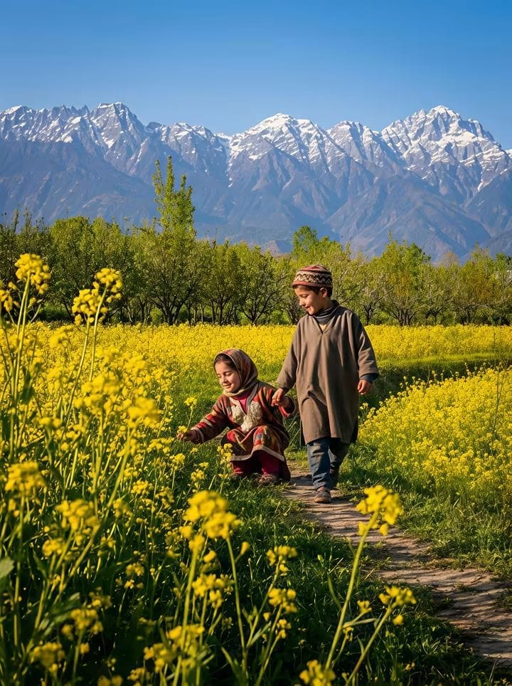
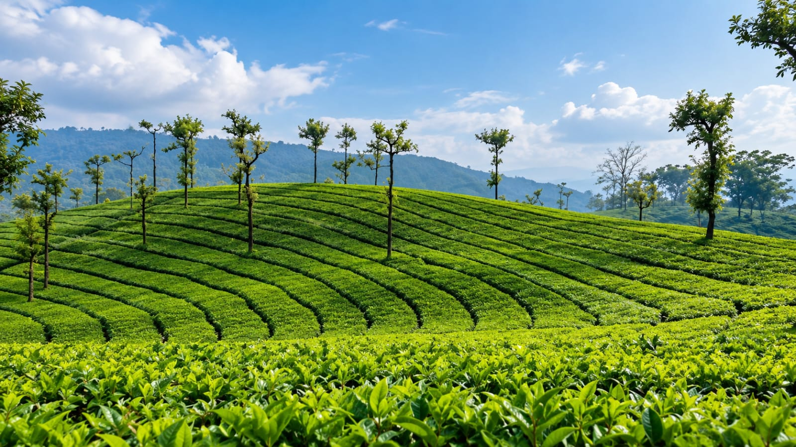
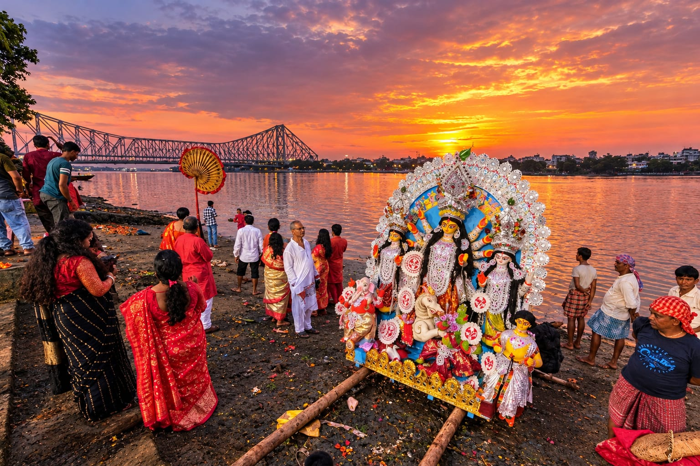
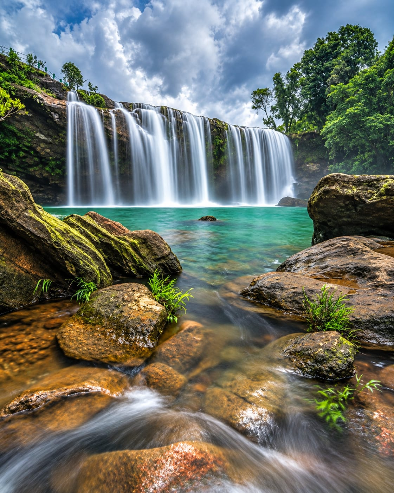
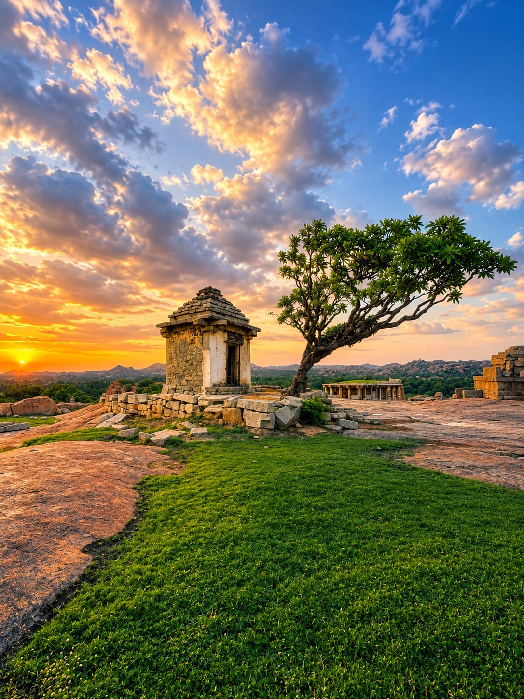
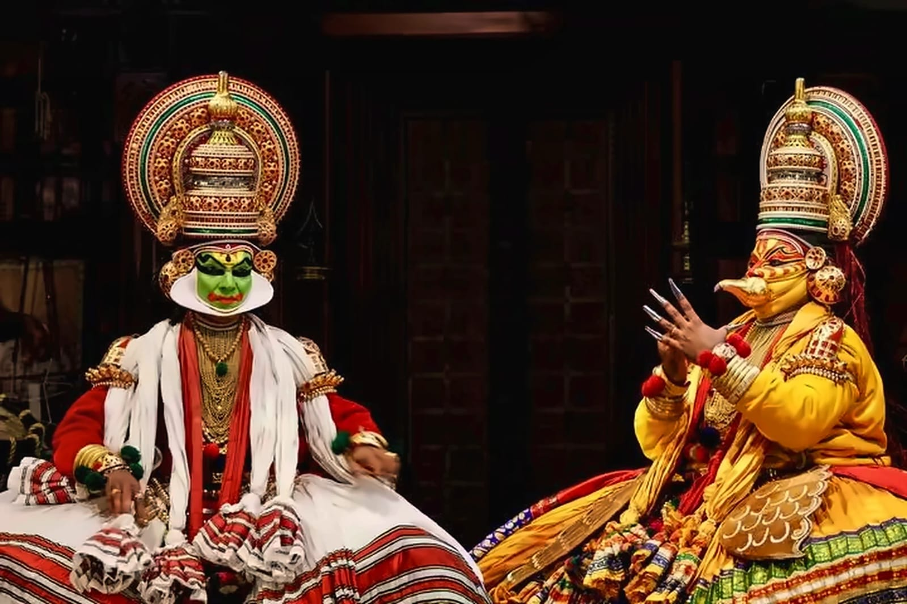

North India
Jammu & Kashmir | Ladakh | Himachal Pradesh | Uttarakhand | Punjab | Rajasthan | Delhi | Uttar Pradesh
Explore this journey →
North Bengal
Darjeeling | Kalimpong | Dooars | Cooch Behar
Tea country, forest trails and Himalayan foothills, with time to take in the quieter corners.
Explore this journey →
East India
West Bengal | Odisha | Jharkhand | Andaman & Nicobar Islands
Explore this journey →
North East India
Sikkim | Assam | Meghalaya | Nagaland | Mizoram
Explore this journey →
West India
Maharashtra | Madhya Pradesh | Goa | Gujarat
Explore this journey →
South India
Kerala | Tamil Nadu | Karnataka | Andhra Pradesh | Puducherry | Lakshadweep
Explore this journey →Let’s find the journey that fits.
Tell us what draws you in, and we’ll help shape the route, stays and experiences around you.
Plan an inbound journey →